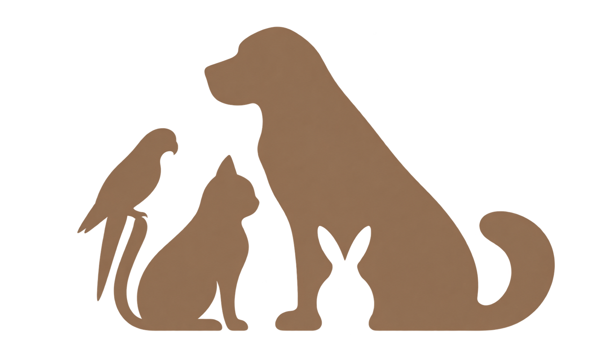
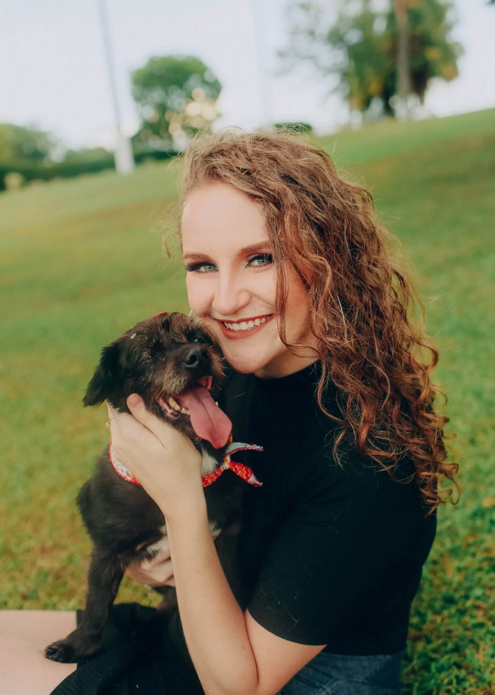
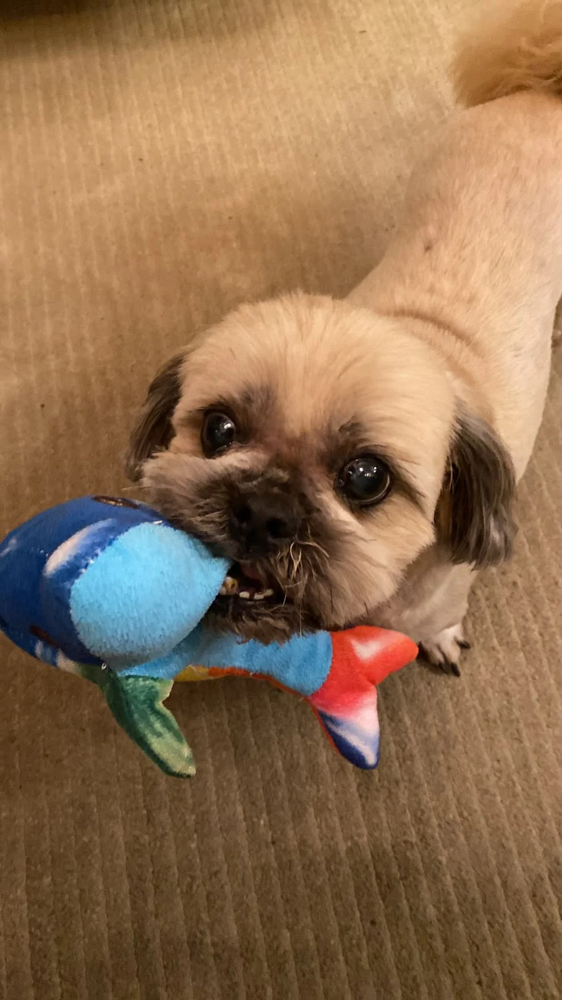
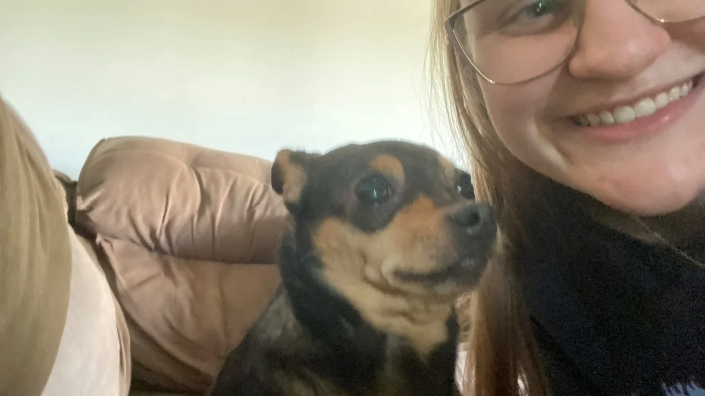

Alimentação & hidratação
Água fresca e alimentação nos horários e nas quantidades definidos por você.

Luísa MezzomoPETSITTER
AFETO EM CADA ENCONTROSeu pet tem uma rotina, um jeito e um mundo só dele. Meu trabalho é cuidar de tudo isso, com presença e carinho.
Vamos conversar pelo WhatsApp
Em casa.
Por perto, de verdade.Sou Luísa Segalin Mezzomo, estudante de Medicina Veterinária na Universidade de Passo Fundo, em fase de conclusão da graduação. Os animais fazem parte da minha vida e da minha paixão desde pequena.
Ser petsitter é a forma que encontrei de unir esse amor ao cuidado diário. Meu compromisso é respeitar as necessidades de cada pet, oferecer atenção e manter os hábitos que fazem ele se sentir em casa.
Acompanhe meu dia a dia no InstagramEnquanto você está fora, seu pet permanece no ambiente que conhece, com cuidados combinados especialmente para ele.
Água fresca e alimentação nos horários e nas quantidades definidos por você.
Tempo de atenção, carinho e atividades que respeitam a personalidade de cada animal.
Passeios para cães durante a visita e higienização das caixas de areia ou tapetes higiênicos.
Medicação, quando necessária e conforme as orientações recebidas, e notícias com fotos, vídeos e mensagens.
Um pouco dos encontros, passeios e cuidados que fazem parte do meu dia a dia.
Antes de começar, me conte sobre a rotina, os hábitos e os cuidados que ele precisa. Assim, podemos combinar tudo com atenção.
Será um prazer conhecer vocês e conversar sobre os cuidados que seu pet precisa.